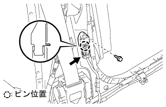

Side Airbag Sensor Assembly RH Removal |
| 1. Handling and Work Precautions |
)| 2. Disconnect Battery Negative Terminal |
)| 3. Remove Front Door Scuff Plate RH |
 |
Disengage the 10 claws and remove the front door scuff plate RH.
| 4. Remove Front Door Opening Trim Weatherstrip RH |
 |
Remove the front door opening weatherstrip RH.
| 5. Remove Rear Door Scuff Plate RH |
 |
Disengage the 8 claws and remove the rear door scuff plate RH.
| 6. Remove Rear Door Opening Trim Weatherstrip RH |
 |
Remove the rear door opening trim weatherstrip RH.
| 7. Remove Center Pillar Garnish LWR RH |
 |
Spread the upper part of the garnish left and right and disengage the 2 claws A.
Pull toward the vehicle inside, disengage the 2 claws B and 2 clips, and remove the center pillar garnish LWR RH.
| 8. Remove Side Airbag Sensor Assembly RH |
Make sure that the ignition switch is OFF.
Make sure that the negative battery terminal is disconnected.
 |
Remove the bolt and pin portion, and remove the side airbag sensor assembly RH from the vehicle.
Disconnect the connector from the side airbag sensor assembly RH.
| 9. Inspect Side Airbag Sensor Assembly RH |
Vehicles not involved in a collision, or vehicles involved in a collision in which the airbag did not deploy
Check the diagnostic trouble codes.
Vehicles involved in a collision
Check the diagnostic trouble codes.
If the side pillar or surrounding area has been damaged and the airbag has not deployed, replace the side airbag sensor assembly with a new one if any of the following applies.